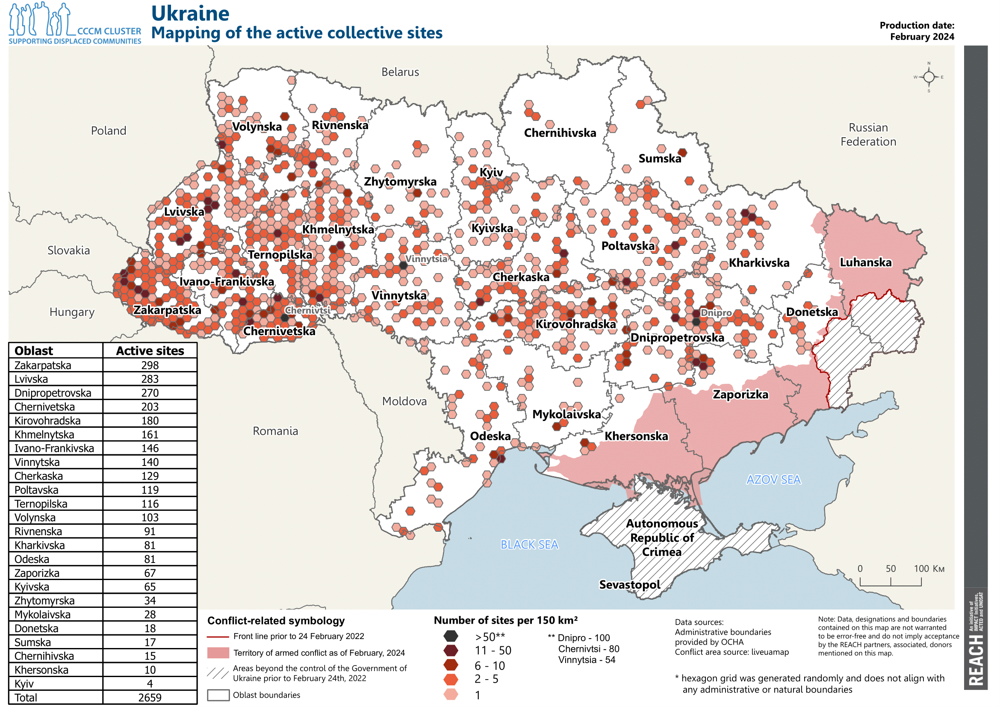
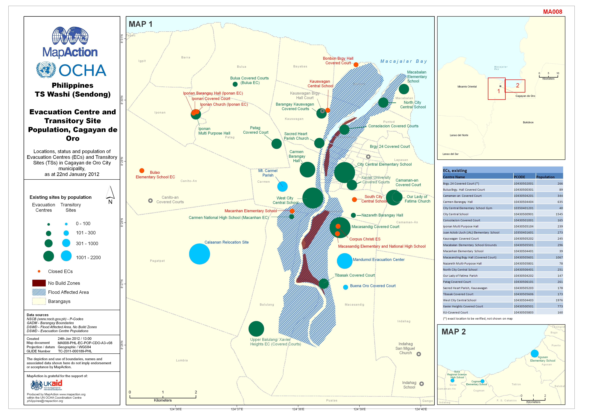
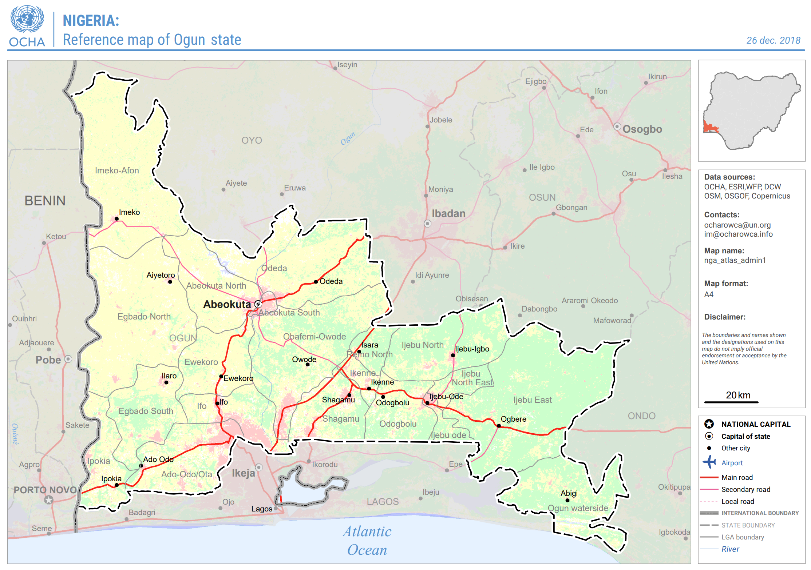
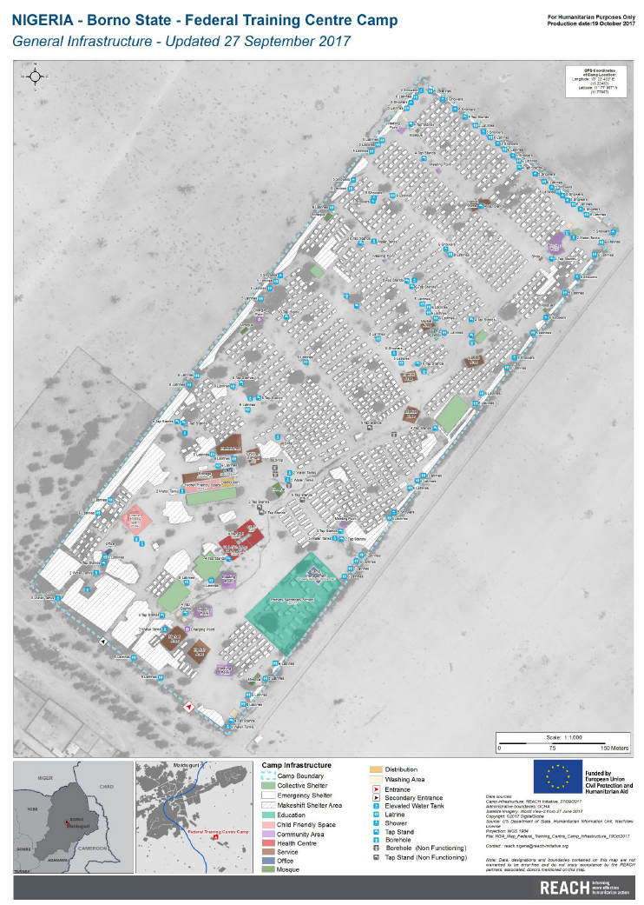
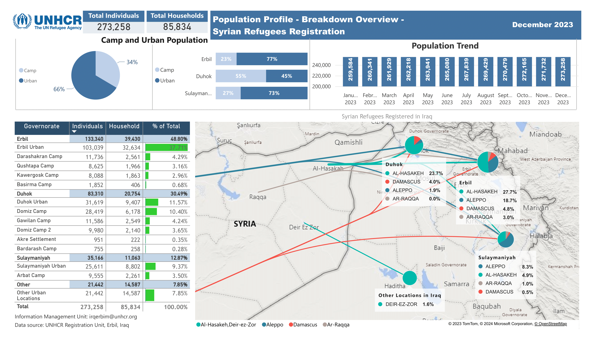

1.1. What is GIS?#
At its core, GIS is a computer-based system to organise data with a spatial component (geodata). There are three core functions of GIS:
Connecting data to maps
Visualisation, organisation and processing of spatial data
Analysing spatial

Fig. 1.1 GIS core functionality#
In humanitarian work, Geographic Information Systems (GIS) serve as powerful tools. They utilize maps to present complex information clearly and efficiently. For instance, during emergencies, GIS can visualize events on a map, depicting where they occur, the extent of impact, and identifying primary needs. It aids in consolidating data from various sources, enabling quick comprehension of situations and facilitating better decision-making.
A more formal definition:
A Geographic Information System (GIS) is a digital tool that integrates data with maps. It enables the collection, management, analysis, and visualization of data by associating them with specific locations on the Earth’s surface. By leveraging GIS, we gain deeper insights into data, revealing patterns and providing a better understanding of the geographic context. This leads to more insightful analysis, improved communication, and ultimately facilitates better evidence-based decision-making. GIS is deeply rooted in geography, the scientific field dedicated to studying Earth’s lands, features, inhabitants, and phenomena. GIS software is capable of displaying various types of data simultaneously on a map, enhancing our ability to comprehend complex spatial relationships.
1.1.1. GIS components#
GIS is more than a software. It’s a system and it includes multiple elements:
{kind=link}
Fig. 1.2 GIS components#
1.1.2. Examples of GIS used by humanitarian organisations#
To get a better understanding of how GIS is used in the humanitarian sector, we have collected some examples from different organisations in the section below (click the different tabs to view the examples by organisation).
This video gives an overview of GIS use in the Lebanese Red Cross in their operations, including informing ambulance services and supporting blood donations.
The International Federation of Red Cross and Red Crescent Societies (IFRC) publishes a wide variety of maps to support active operations. You can find some of those on ReliefWeb or on the IFRC GO platform’s Emergency pages.
The International Committee of the Red Cross (ICRC) has a specialised GIS Support Unit that runs their GIS Resource Center and ICRC GeoPortal. The ICRC resource centre portfolio gives an idea of the kinds of analysis the GIS unit produces, although much of it is not public.
REACH Initiative is a humanitarian data collection and analysis NGO that has a strong GIS specialism. The REACH Resource Centre is where the organisation publishes content, including standalone maps and reports which also often include maps and spatial analysis.
{kind=link}

Fig. 1.3 Example Map: REACH, Ukraine, IDP Collective Site Monitoring, Map, Active Sites, February 2024. Source: REACH#
Médecins Sans Frontières (MSF) has a GIS Unit that publishes geospatial products on the GeoMSF platform to support MSF activities.
MSF uses GIS in four main areas:
Operations, emergency preparedness and response
Healthcare
Advocacy, communication and reporting
Environmental health
This short video outlines the role of GIS in MSF’s response to the 2015 Ebola outbreak in Sierra Leone.
The World Food Programme (WFP) produces maps and publishes geodata both on their
own data platform - WFP Geonode and on the
Humanitarian Data Exchange (HDX).
You can find maps published by WFP on RelifeWeb.
WFP’s Geospatial Activities Catalogue
outline’s to organisation’s geospatial services, which includes developing dashboards like this one one cash assistance during the COVID-19 pandemic in Jordan.
WFP also builds dashboards for advocacy, like HungerMap Live:
iMAAP is an information management NGO that provides support to the UN and international NGOs. Their product portfolio includes examples of maps used in sitaution overviews, interactive dashboards and sector-specific analysis.

Fig. 1.4 Example Map: Afghanistan Earthquake Events Overview February 2024. Source: iMMAP#
MapAction produces maps and geospatial data support decision-making in emergency response. Their maps and data page shows recent products they have published, and their product catalogue gives an overview of the types of services they provide.
{kind=link}

Fig. 1.5 Example Map: Philippines - TS Washi (Sendong) - Evacuation centre amd transitory site population, Cagayan de Or. Source: MapAction#
{kind=link}
1.1.3. GIS vs cartography#
Cartography is the art and science of creating maps, encompassing the study and practice of mapmaking techniques. A Geographic Information System (GIS) represents a modern evolution of traditional cartography, integrating advanced technologies and methods for spatial data analysis and visualization.
While both cartography and GIS involve the creation of maps, they differ significantly in their capabilities and approaches. Cartographic maps typically present a simplified representation of geographic features, constrained by the limitations of physical space and the medium of the map itself. In contrast, GIS allows for the integration of vast amounts of spatial data, enabling complex analysis, modeling, and visualization beyond the scope of traditional cartography.
One key distinction is that GIS facilitates the incorporation of diverse datasets, with virtually unlimited capacity for additional layers and information. This flexibility empowers users to conduct spatial analysis, perform statistical assessments, and derive insights to support decision-making processes.
In essence, while cartography focuses primarily on map design and visualization, GIS extends beyond to encompass spatial data management, analysis, and interpretation. Therefore, GIS serves as a powerful tool for cartographers and professionals across various fields to create, analyze, and derive insights from geographic information
1.1.4. What is spatial analysis?#
Many map products rely on spatial analysis. And indeed, the ability to use analysis tools allows us to get the most out of the data we have and to solve a wide variety of problems. The points below give you an simple definition of the concept.
However, the example of John Snow’s cholera map of 1854 is a popular example of how spatial analysis can help to solve problems.
Spatial analysis studies entities and events using their topological, geometric, or geographic properties.
It includes a variety of techniques to analyse geographic data.
Data can be added to a map as layers and they can interact with each other.
GIS enables you to work with these layers to explore critically important questions and find answers to those questions.
1.1.4.1. An example from the past: John Snow’s cholera map#
In 1854, an outbreak of cholera occurred in the Soho area of London, England. The most common theory was that the disease was spread through the air. Dr. John Snow believed that the danger was in the water. He made a map to analyse the number of deaths in every housing block in Soho. He added the location of water pumps on the map. He found a correlation between one specific water pump and the number of infections.
Dr. Snow’s map of the cholera outbreak of 1854, and the reports that it accompanied, won over the predominant “miasma theory” that the disease was spread through the air. Residents were now warned to boil their water, and so ended the last cholera outbreak London has seen.
This interactive version of the cholera map shows it overlaid on a basemap of modern London.

Fig. 1.6 John Snow Cholera map of London (1854). Source: https://giscience.github.io/gis-training-resource-center/_images/John_snow_zoom_map2.png#
{kind=link}
Using GIS, several measures of spatial central tendency have been applied to the dataset, revealing that the Spatial Mean (the geographic center of the distribution of deaths) of the outbreak lies within 35 meters of the Broad Street Pump, identified as the source of contamination in the 1854 outbreak.
1.1.5. Common map types in humanitarian response#
Note
The humanitarian sector tends to use certain types of maps regularly. These are outlined below.
1.1.5.1. General reference maps#
Show important physical features of an area
Include natural and man-made features
Usually meant to help for navigation or discovery of locations
Usually fairly simple
Can be styled based on the intended audience
{kind=link}

Fig. 1.7 Example Map: Nigeria: Reference Map of Ogun state (As of 26 December 2018) Source: OCHA#
1.1.5.2. Infrastructure maps#
Infrastructure maps in the humanitarian context provide visual representations of critical infrastructure such as roads, bridges, hospitals, and utilities in a given area. These maps help humanitarian organizations assess the accessibility of affected areas, plan relief efforts, and coordinate resources effectively during emergencies or disasters.
Display relevant features and structures in a specific area
Help planning and navigation
High level of detail
Produced after field data collection
{kind=link}

Fig. 1.8 Example Map: Nigeria - Borno State - Mogcolis Camp, General Infrastructure - Updated 24 July 2017 align: center. Source: REACH#
1.1.5.3. Thematic maps#
Thematic maps display specific themes or topics such as population density, disease outbreaks, or vulnerability levels within a geographic area. These maps help humanitarian organizations analyze and understand specific issues or trends, guiding decision-making and resource allocation for targeted interventions and relief efforts.
Focus on a specific theme or subject
Features on the map represent the subject being mapped
Use colours and shapes to display quantitative and qualitative data
Rise awareness about a specific subject

Fig. 1.9 Example Map: Shelter Sector Turkiye: Rental prices changes, February - April 2023 (Source: IFRC)#
1.1.5.4. Analysis maps#
Analysis maps are used to examine and interpret data, revealing patterns, trends, and relationships within a geographic area. They facilitate in-depth understanding of complex situations, enabling decision-makers to derive insights and make informed decisions for effective humanitarian responses.
Analyse data in respect to their geographic location
Create new layers of information from the interaction between multiple features
Use colours and shapes to help users understand specific events
Support decision makers
Generally display a greater level of detail

Fig. 1.10 Example Map: CCCM Cluster Yemen - REACH - Flood Hazard of IDP Sites - Marib governorate - Flood Depth Model. Source: REACH#
1.1.5.5. Situation/descriptive maps#
Situation or descriptive maps provide a snapshot of specific conditions or events in a particular geographic area. They visualize key information such as locations of resources, population distribution, infrastructure, and environmental factors. These maps offer a clear overview of the current situation, aiding in understanding and communication among stakeholders involved in humanitarian operations.
Used to better visualize a specific ongoing and/or past situation
Maps can include narrative and graphic elements
Can be used in reports and/or to raise awareness on a specific event
{kind=link}

Fig. 1.11 Example Map: UNHCR Iraq Population Profile - Breakdown Overview - Syrian Refugees Registration December 2023. Source: UNHCR#